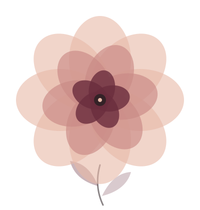

Lubrificanti: guida semplice per chi non ne ha mai usato uno
Acqua, silicone o olio, come sceglierlo e come portarlo in camera senza che sembri una diagnosi: il prodotto più utile e meno raccontato dopo i 45.
Un blog per chi sta insieme da quindici, venti, trent'anni e vuole ritrovare l'intimità. Parole chiare, tono adulto, niente imbarazzo.
Leggi il primo articolo
Acqua, silicone o olio, come sceglierlo e come portarlo in camera senza che sembri una diagnosi: il prodotto più utile e meno raccontato dopo i 45.
Nonni, logistica, sensi di colpa e la paura di non sapere cosa dirsi: la guida pratica alla prima notte in due dopo anni.
Cucinare, camminare, ballare in cucina, scriversi una lettera, guardare le stelle.
Note calde, quantità giuste e il piccolo rito che rende speciale una serata insieme.
Come scegliere una fragranza, curare la pelle e riprendere il piacere di curarsi, senza fare una gara con il tempo.
Un tempo piccolo, protetto come una riunione importante, in cui tornare due persone e non due ruoli. Dove trovarlo e cosa farne.
Domande, sensi, massaggio a tempo e un mazzo che propone al posto vostro: cinque pretesti per una sera in due, senza pressione.
Da Saturnia a Bormio: sette località termali dove l'unico programma è stare in due, nell'acqua calda.
Lo speculare della menopausa, che quasi nessuno racconta bene: cosa cambia, cosa aiuta e come affrontarlo in due.